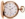
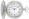

Cygwin Gold Star Awards
This page is dedicated to the Cygwin Gold Star award. The award is given
to people who have pleased a Cygwin project lead
by their actions or contributions. Each star is a link detailing the
circumstances in which it was awarded.
Distinguished recipients
- Ken Brown
(Dec 2011)
(Oct 2014)
– For finding and fixing a nasty CPU register corruption bug.
- Kai Tietz
(Oct 2014)
– For finding and fixing a nasty CPU register corruption bug.
- Eli Zaretskii
(Oct 2014)
– For finding and fixing a nasty CPU register corruption bug.
- Jon Turney
× 5
(Jul 2009)
(Aug 2010)
(Dec 2010)
(Nov 2011)
(Nov 2011)
(Aug 2013)
(Oct 2014)
– For finding and fixing a nasty CPU register corruption bug.
- Corinna Vinschen
× 5
(Jul 2003)
× 2
(Dec 2004)
(Dec 2009)
(Nov 2011)
(Mar 2012)
(Oct 2014)
– For finding and fixing a nasty CPU register corruption bug.
- Chris Sutcliffe
(Nov 2006)
(Apr 2007)
(Jul 2007)

(Aug 2012)
(Sep 2014)– For maintaining lots of packages over the years.
- Marco Atzeri
(Jan 2010)
(Jul 2011)
(Feb 2012)
(Mar 2012)
(Mar 2012)
(Jan 2013)
(May 2014)
(Aug 2014)
(Aug 2014)
– For adopting the orphaned ed package.
- Adam Dinwoodie
(Mar 2014)
(Aug 2014)
– For adopting the git package.
- Tony Kelman
(Aug 2014)
– For adopting the orphaned p7zip package.
- Christopher G. Faylor (a.k.a. CGF)
× 20
(Apr 2004)
(Feb 2005)
(July 2008)
(Dec 2009)

(Aug 2014)
– For lifetime achievement and contributions to the Cygwin project.
- Achim Gratz
(Apr 2013)
(Apr 2014)
(Jun 2014)
(Jul 2014)
– For adopting the rcs package and fixing a long-standing problem in it.
- David Stacey
(Sep 2012)
(Aug 2013)
(Nov 2013)
(Jun 2014)
– For adopting the orphaned xloadimage package.
- Jari Aalto
(Aug 2007)
(Dec 2007)
(Oct 2012)
(Jun 2014)
– For adopting the orphaned rsync and tnef packages.
- Chris J. Breisch
(Jun 2014)
– For packaging man-db.
- Shaddy Baddah
(Sep 2009)
(Sep 2009)
(Nov 2013)
(May 2014)
– For tracking down and fixing a screen corruption bug in screen.
- Mark Geisert
(Sep 2013)
– For being observant.
- Volker Zell
(Nov 2003)
(Sep 2005)
(Apr 2007)
(Jul 2007)
(Dec 2007)
(Mar 2008)
(Apr 2012)
(Aug 2013)
– For adopting the orphaned bsflite and jgraph packages.
- David Rothenberger
(Jul 2003)
(Jun 2005)
(Jul 2007)
(Jul 2009)
(May 2013)
(Aug 2013)
– For adopting the orphaned whois package.
- David Levine
(Aug 2013)
– For adopting the orphaned par package.
- Fedin Pavel
(Jun 2013)
– For finding a simple solution to a longstanding problem.
- Frank Fesevur
(Jun 2013)
– For adopting the orphaned shutdown package.
- Yaakov Selkowitz
(Sep 2005)
(Jul 2007)
× 5
(Jul 2009)
(Dec 2009)
(Dec 2009)
(Feb 2010)
(June 2010)
(Mar 2011)
(Nov 2011)
(Mar 2012)
(Mar 2012)
(Mar 2012)
(Apr 2012)
(Jul 2012)
(Jan 2013)
– For adopting the orphaned grace package.
- JonY
(Aug 2012)
– For adopting the w32api package.
- Warren Young
(Sep 2007)
(Mar 2012)
– For redesigning the Cygwin logo in setup.exe.
- Andrew Schulman
(Aug 2005)
(Jul 2006)
(Feb 2007)
(Jul 2007)
(Jul 2009)
(Dec 2011)
– For responsiveness in maintaining the gold star page.
- Ken Brown
(Dec 2011)
– For improving the project documentation on his own initiative.
- Andy Koppe
(Aug 2010)
(Nov 2011)
– For integrating Mintty shortcuts into setup.exe
- Charles (Chuck) Wilson
× 5
(Dec 2006)
(Jun 2007)
(Apr 2008)
(Apr 2008)
(Mar 2009)
(Aug 2010)
(Oct 2011)
– For supporting libiconv
- David Sastre
(Mar 2011)
– For adopting and revamping the vital base-files package.
- John Carey
(Mar 2011)
– For kicking butt on CWD handling.
- John Morrison
(Sep 2010)
– For years of service maintaining the base-files and base-passwd packages
- Damien Doligez
(Sep 2010)
– For adopting the orphaned ocaml package
- Dave Korn
(Jan 2004)
(Mar 2004)
(Sep 2004)
(Jun 2005)
(Feb 2006)
(Nov 2006)
(Mar 2007)
(Jul 2009)
(Aug 2010)
– For recording zero-size tarballs as successfully installed in setup.exe, thereby de-annoying CGF
- Jason DePriest
(Nov 2009)
– For reminding us of the right way to handle a FAQ
- Ralph Hempel
(Jul 2009)
(Jul 2009)
– For tireless support of the setup.exe command line
- Eric Blake
× 2
(Jan 2005)
(May 2005)
(Feb 2006)
(Nov 2006)
(Jul 2009)
– For obsoleting ash, and its attendant stone-age code
- Andrew Punch
(May 2009)
– For adding the package search feature in setup.exe (hear, hear)
- Brian Dessent
(May 2004)
(Sep 2004)
× 2
(Apr 2005)
(Jun 2006)
(Dec 2008)
– For patience, insight, and helpfulness on the mailing lists
- Matt Wozniski
(June 2008)
– For pointing out what should have been obvious
- Max Bowsher
(Nov 2003)
(Apr 2008)
– For lifetime contribution to the Cygwin project
- Lapo Luchini
(Jan 2006)
(Aug 2007)
(Dec 2007)
– For taking over the orphaned nano package
- Jon Allen
(Nov 2005)
× 2
(Nov 2006)
(Aug 2007)
– For adopting the tnef package
- Jan Nieuwenhuizen
× 2
(Jul 2007)
– For quietly taking over the orphaned libfontconfig1 and libfontconfig-devel packages (slightly retroactive)
- Steffen Sledz
(Jul 2007)
– For efforts in adopting a tough package (emacs)
- Reini Urban
(Oct 2004)
(Oct 2004)
(Aug 2006)
(Jul 2007)
– For being mentally prepared to take over maintainership for perl
- Pierre A. Humblet
(Jun 2003)
× 5
(May 2004)
× 2
(May 2004)
– For taking over cron
- Phil Betts
(Mar 2007)
– For not being afraid to climb on that ol' soapbox re: 3PPs
- Joshua Daniel Franklin
(Mar 2003)
× 2 × 2
(Dec 2006)
– For his highly appreciated commitment to maintaining Cygwin documentation
over the last couple of years
- Volker Quetschke
(Nov 2006)
– For picking up the problematic ImageMagick package and making it
functional
- Matthew Woehlke
(Jul 2006)
(Aug 2006)
– For wisely redirecting what could have been an HTML email flame war into the
hippo zone
- Tanya Blake, Molly Franklin, and all of our wives
(Jul 2005)
(Mar 2006)
– For their invaluable efforts in bringing
future
cygwin users into the world
- James R. Phillips
(Feb 2006)
– For taking over the orphaned ghostscript
- Yitzchak Scott-Thoennes
(Jul 2004)
× 2
(Jan 2005)
× 2
(Jan 2006)
– For pointing out that package maintainers should use snapshots
- Igor Peshansky (né Pechtchanski)
(Apr 2003)
(Jul 2003)
(Nov 2003)
(Jan 2006)
– For tracking down incorrect identification of non-Cygwin processes
and sticking by it.
- Antony Baxter
(Oct 2005)
– For "a nice comeback" (a.k.a. seeing that fiddler crab)
- Alan Hourihane
× 2
(Aug 2005)
– For the offer to take over Cygwin/X maintainership
- Larry Hall
× 3
(Apr 2005)
(Jun 2005)
– For the most on-topic and painful pun
- Max Kaehn
(Jun 2005)
– For the truly heroic effort of understanding and documenting how
cygtls works
- Karl M.
(May 2003)
(Jun 2005)
– For the "Cygwin night at the OSCAs" concept (need I say more?)
- Brian Ford
(Nov 2003)
(Jun 2004)
× 2
(Nov 2004)
– For spearheading the dwarf-2 effort for Cygwin
- Dave Kilroy
(Oct 2004)
– For going above and beyond the expected volunteer effort (with the
chere package)
- Robert R. Schneck-McConnell
(Jan 2004)
(Oct 2004)
– For an attempt to apply a creative solution to a problem
- Jason Tishler
× 2
(Oct 2004)
– For years of PostgreSQL support (retroactive) and for being
a long time contributor to Cygwin
- James Hu
(Jun 2004)
– For volunteering to take over cURL
- Kevin P. Roth
(Jun 2004)
– For years of cURL service (retroactive)
- Gareth Pearce
(Apr 2004)
– For educating the community on gcc versioning
- Matthew O. Persico
(Apr 2004)
– For "sheer cleverness" (a.k.a. saying it with sheet music)
- Anonymous contributor
× 10
(Apr 2004)
– For contributing a brand new 64-bit Windows system
- Philippe Ritter
(Dec 2003)
– For actually testing a snapshot unbidden and reporting that it fixed
a problem
- Ronald Landheer-Cieslak
(Nov 2003)
– For taking over splint
- Harold L. Hunt II
(Nov 2003)
– For taking over links
- Frank Richter
× 7
(Nov 2003)
– For making Cygwin setup resizeable
- Gary R. Van Sickle
× 3
(Nov 2003)
– For numerous Cygwin setup contributions leading to resizeability
- Gerrit P. Haase
× 5
(Oct 2003)
– For heroically taking over gcc
- Daniel Reed
(Oct 2003)
– For being a great package coordinator on cygwin-apps
- Mark Blackburn
(Aug 2003)
– For volunteering to maintain lftp
- Abraham Backus
(Jul 2003)
– For being the first to recompile his package for Cygwin 1.5.0
- Dario Alcocer
(May 2003)
– For being an example of reasonable discussion on the list
- Randall Roy Schulz
(Apr 2003)
(Apr 2003)
– For suggesting "cygcheck as an attachment"
- Elfyn McBratney
(who prefers
self-made stars)
 (Mar 2003)
(Mar 2003)
– For standing up and enforcing the GPL
(Mar 2003)
(Mar 2003)
– For standing up and enforcing the GPL
- Eric Fifer
(Apr 2000)
– For enlightening people on the properties of /cygdrive
{kind=link}